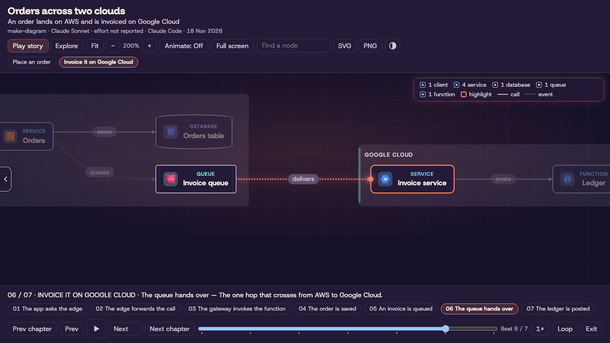

Prompt Spec File.
Your coding agent writes one small JSON spec. Local scripts build the dashboard, diagram, explainer, film or 3D scene. One file, offline.
Claude Code
/plugin marketplace add abhijitbansal/portable-artifacts/plugin install portable-artifacts@portable-artifactsCodex, Copilot, Gemini CLI and others
npx skills add abhijitbansal/portable-artifacts --skill make-dashboard make-diagram make-explainer make-motion make-sceneThen ask: /make-dashboard from sales.csv. More hosts and options in USAGE.
- Project
- portable-artifacts
- Revision
- 2.1.1
- Network at view time
- 0 requests
- Licence
- MIT
- Drawn by
- Claude Code · Codex · Copilot · Gemini CLI
- Checked
- 390 + 1280 px, light + dark
- Tests
- ≈500 files
/make-dashboard
Charts from your data files. Every chart shows its SQL.
- {
- "title": "Product performance",
- "sources": { "sales": { "type": "csv", … } },
- "queries": { "rev_by_product_region":
- "SELECT product, region, SUM(amount) …" },
- "kpis": [
- { "title": "Revenue", "format": "currency" }, … ],
- "charts": [{
- "title": "Revenue by product and region",
- "vegaLite": { "mark": "bar", … } }]
- }
Excerpt, shortened with …. Hover or focus a numbered line.

- Input
- CSV · Parquet · JSON · DuckDB · SQLite · Postgres · MySQL
- Chart kinds
- 11
- Themes
- 9, light + dark
- SQL
- allowlisted
/make-diagram
Architecture, flow, sequence and state. Stories play along the edges.
- {
- "title": "Orders across two clouds",
- "type": "architecture",
- "groups": [ …,
- { "id": "gcp", "label": "Google Cloud" } ],
- "nodes": [ …,
- { "label": "Invoice queue", "kind": "queue" },
- { "label": "Invoice service", "group": "gcp" } ],
- "stories": [ … "beats": [ …,
- { "title": "The queue hands over" } ]
- }
No coordinates: ELK lays it out.

- Types
- architecture · flow · sequence · state
- Node kinds
- 27
- Icons
- 503
- Stories
- 8 chapters
/make-explainer
Recaps, concepts, checklists, plans and slide decks. One page.
- {
- "title": "How portable-artifacts turns …",
- "theme": "dusk",
- "meta": {
- "date": "2026-11-20", "status": "Release 2.1.0" },
- "sections": [{
- "type": "tldr", "label": "The idea",
- "points": [ "Five skills: dashboards, …", … ]
- }, … ]
- }
The model never writes HTML. A linter rejects filler prose before the build.

- Section types
- 26
- Modes
- page · slides
- Presets
- 5
- Embeds
- diagrams · charts · 3D scenes · films
/make-motion
MP4 films from a script of shots. Voice, music and cues made locally.
- { "version": 2, "look": "poster", "format": "16:9",
- "shots": [
- { "id": "idea", "show": "statement" },
- { "id": "flow", "show": "diagram" },
- { "id": "shot", "show": "code" },
- { "id": "close", "show": "end",
- "say": "Your first film is one file away." }
- ]
- }
Each say line sets its shot's timing. Rendered offline, deterministic.
- Shot kinds
- 16
- Looks
- 7
- Formats
- 16:9 · 9:16 · 1:1 · 4:5
- Voice
- local, opt-in
/make-scene
Your rows as an explorable 3D world, with a camera tour.
- {
- "title": "Commits per folder, last 6 weeks",
- "world": "city",
- "data": { "rows": [ …,
- { "group": "web", "t": "2026-W32", "value": 22 },
- … ] },
- "tour": [
- { "title": "Web spikes in week 32", "focus": ["web"] }
- ]
- }
Also: forest, galaxy, terrain, or lift a diagram or chart into 3D.

- Worlds
- city · forest · galaxy · terrain
- Lifts
- diagram · chart
- Rows
- up to 2,000
- Tour
- up to 12 beats
General
notes
- Offline by constructionEvery page carries
default-src 'none'. Specs cannot name a remote URL. - Spec in, file outThe model writes the spec. Scripts validate, lay out, render and check it.
- Any agentClaude Code, Codex, Copilot and Gemini CLI, from one installer.
- Checked, not guessedBuilds are opened at phone and desktop width, light and dark, before you see them.
- Open sourceMIT, built on DuckDB, Vega-Lite, ELK and three.js. Security model.
The register
Every output on this site is real, built by the skills, and sits next to the spec that made it. Open the register.